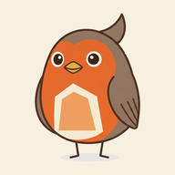

写真をKIFに
よくある質問
撮る・読み取る
うまく読み取れません
 ○ぜんぶ入る
○ぜんぶ入る ×切れている
×切れている ×横倒し
×横倒し ×遠い
×遠い
盤の 9×9 と両側の駒台がぜんぶ入るように、寄って撮り直してください。駒が手や物でかくれていないかも見てください。くわしくは撮り方のコツへ。
時間がかかります
ふつうは数秒で盤が出ます。通信が遅いと長くかかることがあります。画面はそのままでお待ちください。
どの機種で使えますか？
スマートフォン・タブレット・パソコンのブラウザ（Safari、Chrome など）で使えます。アプリのインストールや会員登録はいりません。写真は縦長でも横長でもかまいません。
直す・渡す
間違った駒はどう直しますか？
写真と見くらべて、違う駒を押します。下に一覧が出るので、正しい駒をえらびます。持ち駒は押すと数を直せます。手番は上の「先手番」「後手番」でえらびます。くわしくは使い方へ。
ほかの将棋アプリに渡せますか？
ぴよ将棋と KENTO は、結果の画面のボタンからそのまま開けます。ほかのアプリには、KIF か SFEN をコピーするかファイルに保存して渡してください。局面図は画像で保存・シェアできます。
困ったとき
うまく動きません
お問い合わせからお知らせください。起きた時刻と、どの画面で何をしたかを書いていただけると助かります。

1局まるごと残したいときは写真1枚で作れるのは、その時点の局面です。指し手つきの棋譜は、盤の横に置くだけのアプリ「コマドリ」で
›
撮ってみる